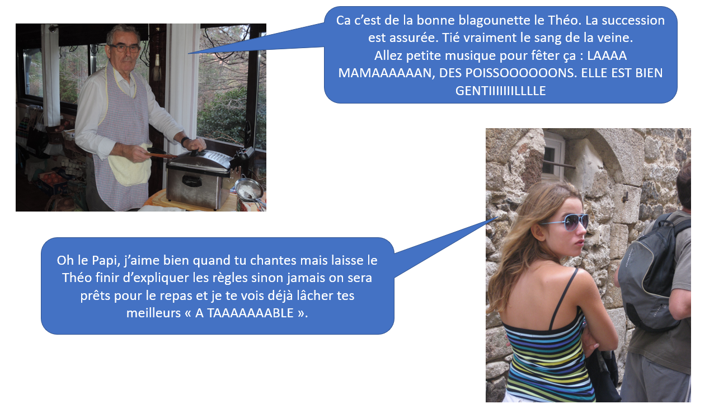
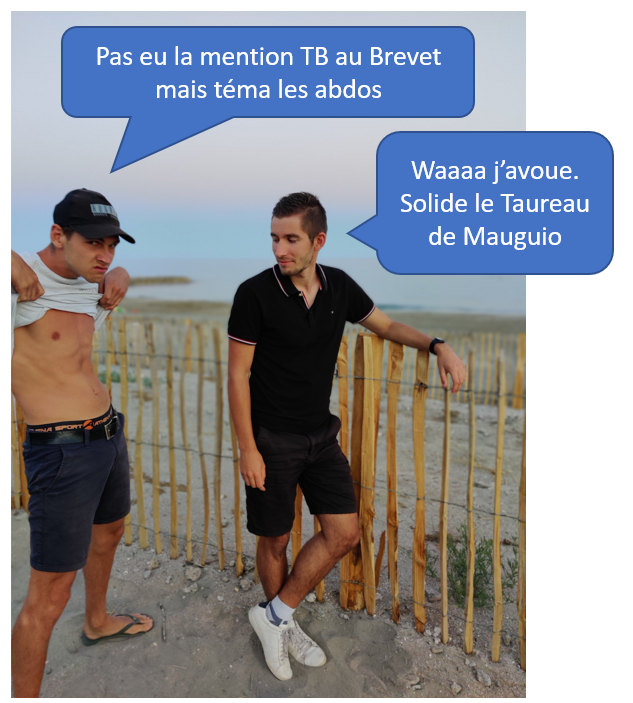

Bien joué, vous avez été bon à ce jeu d'adresse (web). Lol c'est le papi Jean-Pierre qui aurait pu la faire.

Mais oui trêve de plaisanterie. C'est une triple (ké)quête qui vous attend.
Bon plus sérieusement, vous avez tous été convoqués pour des
raisons différentes. arthur34 pour enfin finir sa quête de Moloke depuis plus de 15 ans d'errance,
Minautore pour niquer la gueule de Wotan once more et le Taureau de Mauguio pour récupérer sa vachette d'interville !
Par chance, bien que les buts soient distincts, la manière de la réaliser est la même. Suivre cette chasse aux trésors et aller au bout.
Le principe est assez simple, vous allez devoir aller devoir vous rendre succéssivement dans 10 lieux autour de la maison du Sartre.
Sur chacun de ces lieux, il vous faudra trouver un bout de papier. Sur ce bout de papier, une enigme sera écrite, il vous faudra alors vous rendre
sur ce site et inscrire la réponse à l'énigme.
Vous avez déjà trouvé le premier lieu qui est la "cascade" et l'énigme qui était de trouver ce site web. A vous donc de trouver les 9 autres lieux et les
8 autres énigmes.
NB : Chaque réponse devra être écrite en minuscule sans accentuation (sinon c'est chiant à coder).
Avant de partir pour cette triple (ké)quête il faudra vous équiper des choses suivantes :
Vos cerveaux, c'est votre meilleur ami pour cette épreuve
Vos téléphones portables mais seules les applications appel, sms et Youtube sont autorisées
La calculatrice est interdite, tous les calculs se font de tête, éventuellement sur papier
Dès que vous êtes prêts, cliquez sur ce petit BG :
Avancement de la quête : 2/10
Vous êtes prêts ? ET bien LIGRETTTOOOOOOO... Voici l'indice pour trouver le second lieu.
On cherche un lieu où il y a Arthur mais pas Mino, où il y a Louan mais pas Zouko, où il y a Cécile mais pas Véro et où il y a Dudu mais pas Nyko.
Marque la réponse à l'énigme ici :
n'est pas la bonne réponse...
Avancement de la quête : 3/10
Et oui bien joué los primos ! One Two Three Four Five .... and Six. Donc S.
Allez sans transition aucune, voici un indice pour trouver le lieu suivant :
Le reste de la division euclidienne de 6861 par 328 devrait vous y aider...
Marque la réponse à l'énigme ici :
n'est pas la bonne réponse...
Avancement de la quête : 4/10
Bien joué les gars, c'était pas simple. Allez on se fait un kiff :
Allez, petit rébus pour le prochain lieu...
Marque la réponse à l'énigme ici :
n'est pas la bonne réponse...
Avancement de la quête : 5/10
Puchline indémodable du jeune Avezard :
Indice musical cette fois-ci :
Marque la réponse à l'énigme ici :
n'est pas la bonne réponse...
Avancement de la quête : 6/10
On garde 1 blé, 1 laine, 1 minerai, 1 bois et 1 argile. On jette les 4 autres à cause du 7.
On contruit une route et on fait une carte développement en espérant tomber sur la carte construction de deux routes.
Si c'est le cas, on peut prendre la route la plus longue avec ces 3 routes supplémentaires.
On avait déjà 8 points de victoire. Avec ces 2 supplémentaires ça fait 10. BANGER !
Pour le nouveau lieu à trouver, c'est un combo des 3 indices suivants :
Une musique :
Un animal :
Une direction : ↑
Marque la réponse à l'énigme ici :
n'est pas la bonne réponse...
Avancement de la quête : 7/10
Et oui BASSHUNTEEEEEEEER :
L'indice pour le prochain lieu est simple :
Il vous faut à présent aller sur les traces de copaingilles...
Marque la réponse à l'énigme ici :
n'est pas la bonne réponse...
Avancement de la quête : 8/10
Pour le nouveau lieu, trouvez le mot manquant dans cette citation :
Selon Mc Walter, le père de Vanessa avait un polo Lacoste, Lacoste qui est a pour
symbole un crocodile, crocodile qui est un mot en 3 syllabes comme arrosoir, ______ ou encore volonté.
Marque la réponse à l'énigme ici :
n'est pas la bonne réponse...
Avancement de la quête : 9/10
Et oui c'était bien Fifi Brindacier qu'Orel rajoute à la fin. La réponse en image :
Pour le nouveau lieu, revivons une situtation qui se passe chaque fois que l'on quitte Ucel :
Vous allez bientôt partir de chez Papi et Mamie pour rejoindre Aix, Mauguio ou Montpellier. C’est à ce moment précis que Mamie vous demande d’aller dans un certain lieu, récupérer un liquide rouge, précieux. Vous me suivez ?
Marque la réponse à l'énigme ici :
n'est pas la bonne réponse...
Avancement de la quête : 10/10

Vous touchez au but de cette quête. Vous allez bientôt résoudre Moloke, retrouver la vachette d'interville, niquer la gueule de Wotan.
Allez on y va dernier indice :
Dans la chanson de Renan Luce, la femme qui lui a envoyé la lettre lui a indiqué qu’elle sera quelque part le dimanche. Mais où ?